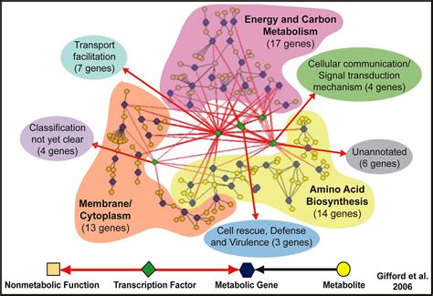
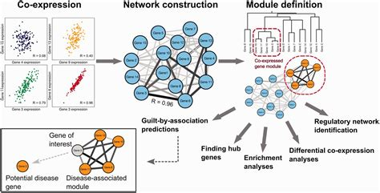
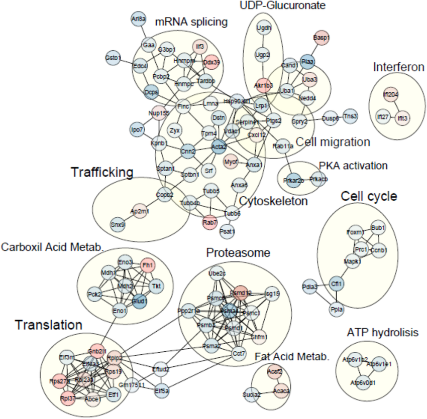
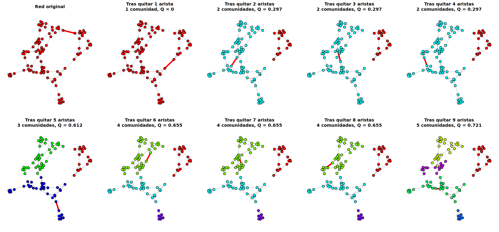
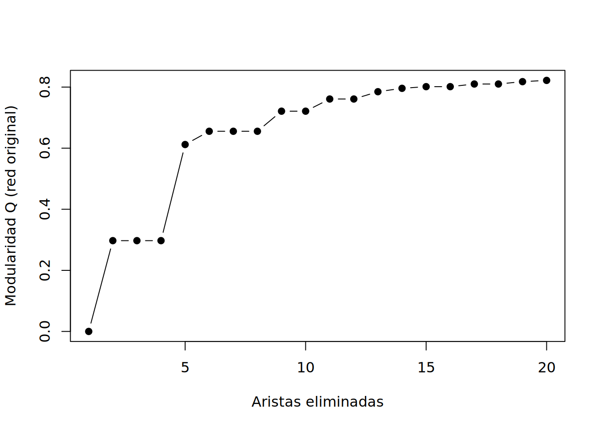
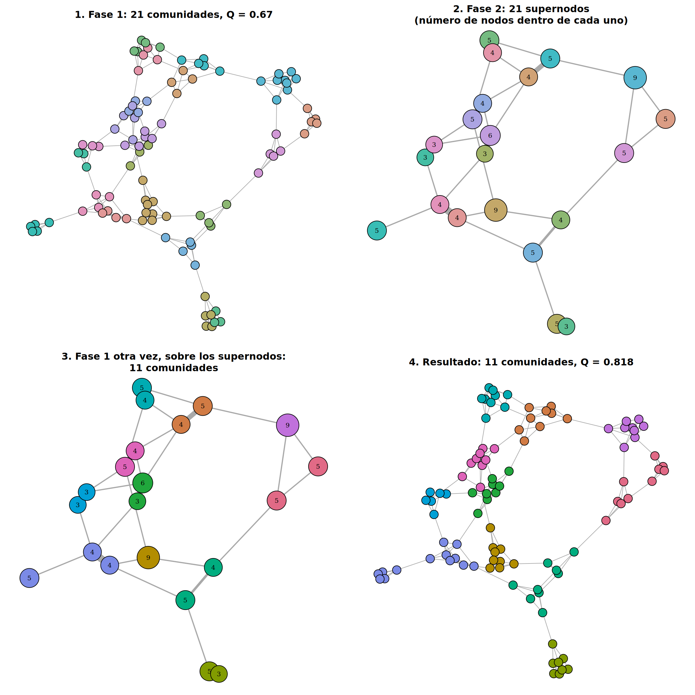
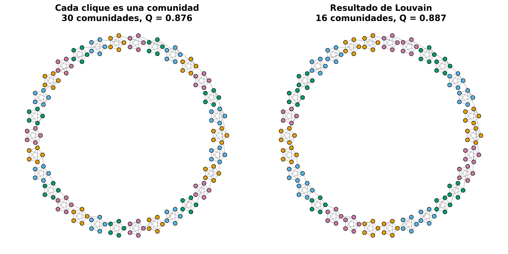
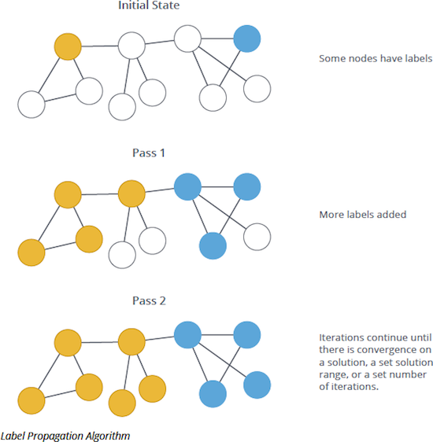
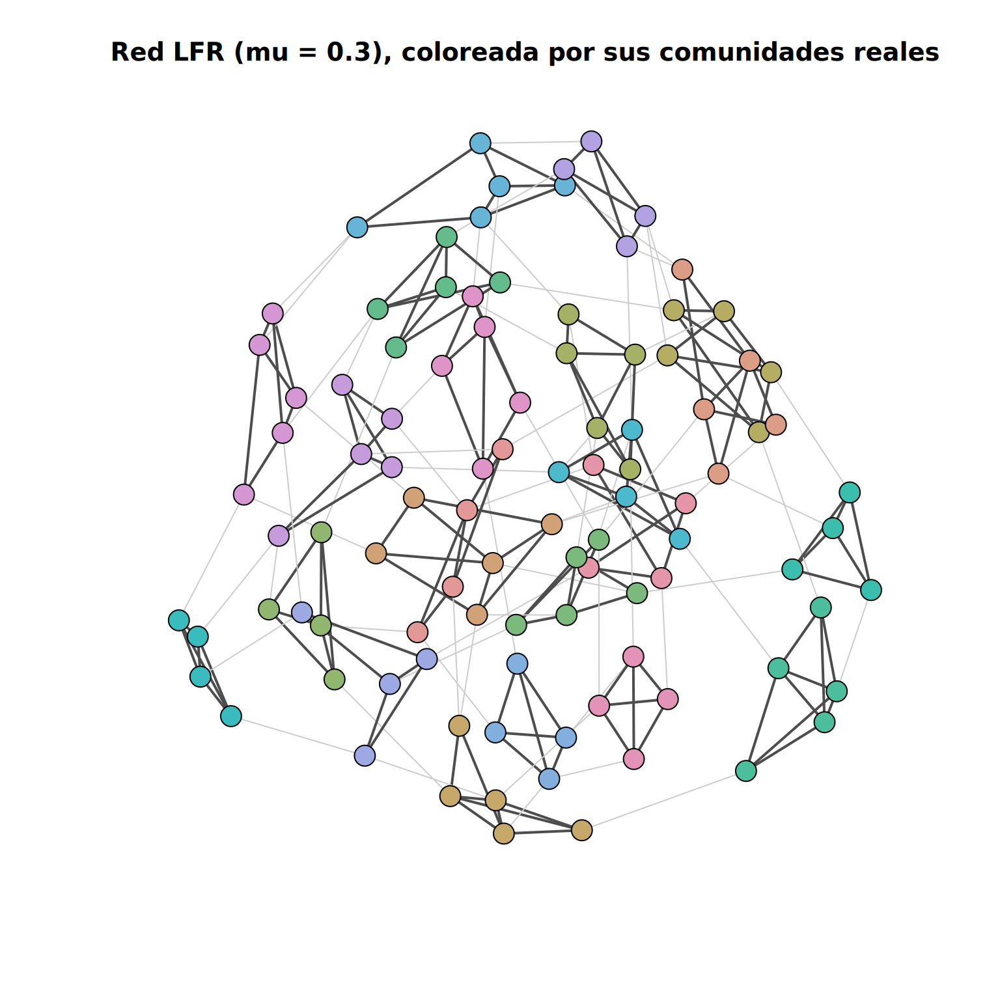

Partición de grafos (I). Módulos en redes biológicas
Introducción: Módulos en Redes Biológicas
Las redes biológicas no son homogéneas: están formadas por módulos (o comunidades), grupos de nodos muy conectados entre sí y poco conectados con el resto de la red. Un módulo suele corresponder a una unidad funcional:
En redes metabólicas, los módulos corresponden a rutas metabólicas: los metabolitos de la glucólisis, por ejemplo, están mucho más conectados entre sí que con los de otras rutas.

public.ornl.gov
En redes de co-expresión génica, los módulos son grupos de genes que se activan y desactivan juntos, como los genes del ciclo celular o de la respuesta al estrés.

rna-seqblog.com
En redes de interacción proteína-proteína (PPI), los módulos corresponden a complejos proteicos (el ribosoma, el proteasoma) o a vías de señalización.

Labusek et al., 2023
¿Por qué es modular la biología?
La organización en módulos no es casual (Hartwell et al., 1999):
Especificidad: cada módulo realiza su tarea sin interferir con los demás, igual que las piezas de una máquina.
Robustez: un fallo (una mutación, un fármaco) tiende a quedarse dentro de su módulo, en lugar de propagarse a toda la célula.
Evolución: un módulo que funciona se puede reutilizar. La cascada de quinasas MAPK, por ejemplo, aparece una y otra vez en distintas vías de señalización (respuesta a factores de crecimiento, a feromonas en levadura, al estrés), conectada a receptores y dianas diferentes.
Módulos dentro de Módulos
Los módulos, además, están anidados: las proteínas ribosómicas forman la subunidad pequeña y la grande del ribosoma; el ribosoma forma parte de la maquinaria de traducción; y esta, de la síntesis de proteínas. Del mismo modo, la glucólisis es una ruta dentro del metabolismo energético.
Esto importa a la hora de buscar comunidades: no existe un único número “correcto” de comunidades, sino que depende de la escala que nos interese. Por eso algunos métodos devuelven una jerarquía completa (un dendrograma) que podemos cortar al nivel que queramos, y por eso veremos que algunos métodos tienden a pasar por alto los módulos más pequeños.
¿Para qué sirve encontrar módulos?
Predecir la función de genes desconocidos (guilt by association): si una proteína sin función conocida está en un módulo en el que casi todas las demás participan en la reparación del ADN, probablemente también lo haga.
Entender enfermedades: los genes asociados a una misma enfermedad tienden a concentrarse en la misma región del interactoma, formando un “módulo de enfermedad” (Barabási et al., 2011). Encontrar ese módulo ayuda a proponer nuevos genes candidatos.
Encontrar dianas terapéuticas: Gordon et al. (2020) construyeron la red de interacciones entre las proteínas del SARS-CoV-2 y las humanas (332 interacciones de alta confianza). Agrupando las proteínas humanas en módulos (por ejemplo, de traducción o de tráfico vesicular), identificaron 66 proteínas humanas que ya eran dianas de 69 fármacos y compuestos, aprobados o en desarrollo, y que se podían ensayar contra el virus.
Reducir la complejidad de los datos ómicos: en lugar de analizar 20.000 genes uno a uno, se analizan unas decenas de módulos de co-expresión. Es la idea del método WGCNA (Langfelder y Horvath, 2008), que veremos más adelante en el curso.
Tres Familias de Métodos
Existen muchísimos algoritmos de detección de comunidades, pero casi todos parten de una de estas tres ideas sobre qué es una comunidad:
Familia
Idea
Método que veremos en detalle
Otros métodos de la familia
1. Cortar los puentes
Las comunidades están separadas por aristas “cuello de botella”
Edge Betweenness
2. Maximizar la modularidad
La mejor partición es la de mayor \(Q\)
Louvain
Fast Greedy, Leiden
3. Seguir el flujo
Un caminante aleatorio queda “atrapado” dentro de las comunidades
Infomap
Walktrap
Lo que define cada familia es cómo encuentra las comunidades. Algunos métodos de las familias 1 y 3 usan además la modularidad al final, solo para decidir con cuántas comunidades quedarse; eso no los convierte en métodos de la familia 2, que usan la modularidad para buscar las comunidades.
Veremos en detalle un método de cada familia, con su explicación y un ejemplo en R, y describiremos brevemente los demás. Al final veremos un método más que no encaja en ninguna familia (Label Propagation) y compararemos todos los métodos sobre una misma red en la que conocemos las comunidades “reales”.
Familia 1: Cortar los Puentes. Edge Betweenness
El algoritmo de Girvan y Newman (2002) es la forma más directa de buscar comunidades: encontrar las aristas que hacen de puente entre grupos y quitarlas, una a una, hasta que la red se rompe en trozos. Esos trozos son las comunidades. Para saber qué aristas son puentes usa la betweenness, que ya conocemos de la primera práctica.
Conceptos Básicos de Edge Betweenness
La betweenness de una arista es casi la misma medida que la centralidad de intermediación que vimos en la primera práctica, pero aplicada a los enlaces: mide cuántos caminos más cortos entre pares de nodos pasan por un enlace específico. Los enlaces con alta betweenness suelen actuar como “puentes” entre diferentes comunidades dentro de una red.
Matemáticamente, la betweenness de una arista \(e\) se define como:
Donde:
- \(\sigma_{st}\) es el número total de caminos más cortos entre los nodos \(s\) y \(t\).
- \(\sigma_{st}(e)\) es el número de esos caminos que pasan por la arista \(e\).
Cómo Funciona el Algoritmo
Cálculo de Betweenness Inicial:
Se calcula la betweenness de todas las aristas. Es el paso más lento: hay que calcular los caminos más cortos entre todos los pares de nodos.
Eliminación de Aristas:
Se quita la arista con la betweenness más alta. Si era el último puente entre dos grupos, la red se parte en dos.
Reevaluación de Betweenness:
Después de eliminar una arista, se recalcula la betweenness de las aristas restantes, ya que la estructura de la red ha cambiado: los caminos que usaban la arista eliminada buscan otra ruta, y otra arista pasa a ser el “cuello de botella”.
Repetición:
Se repite hasta quitar todas las aristas, cuando cada nodo queda solo.
Elección del Corte:
Los pasos anteriores producen una secuencia de particiones, de una sola comunidad (la red entera) a tantas comunidades como nodos. Para quedarnos con una, se calcula la modularidad (\(Q\)) de cada partición sobre la red original y se elige la de \(Q\) máxima. Fíjate en que la modularidad solo se usa al final, para elegir entre las particiones: las comunidades se encuentran cortando puentes, no maximizando \(Q\) (eso es lo que hará la familia 2). La modularidad la vimos en la práctica anterior; mide la calidad de una partición y se define como:
\(\delta(c_i, c_j)\): Indicador de si \(i\) y \(j\) están en la misma comunidad.
Visualización del Proceso de Clustering
Para ver el algoritmo paso a paso usamos una red LFR (Lancichinetti-Fortunato-Radicchi): un generador de redes sintéticas con comunidades conocidas (“plantadas”), grados heterogéneos (hay hubs) y comunidades de distintos tamaños. El parámetro mu es la fracción de las aristas de cada nodo que salen de su comunidad: con mu = 0.1, el 90% de las aristas quedan dentro, así que las comunidades son claras. La función sample_lfr() está en el paquete netUtils (install.packages("netUtils")), y guarda la comunidad real de cada nodo en V(g)$membership.
# Usamos la misma disposición en todos los dibujos para poder compararlayout_lfr <-layout_with_fr(g_lfr)# Dibuja la red coloreando cada componente conexa, con la arista de# mayor betweenness (la siguiente que se eliminará) en rojodibuja_paso <-function(h, titulo) { comp <-components(h) eb <-edge_betweenness(h) siguiente <-seq_along(eb) ==which.max(eb)plot(h, layout = layout_lfr, main = titulo,vertex.color =rainbow(comp$no)[comp$membership],vertex.size =6, vertex.label =NA,edge.color =ifelse(siguiente, "red", "grey"),edge.width =ifelse(siguiente, 4, 1))}h <- g_lfrq <-numeric(20)# Dibujamos la red original y cada una de las 9 primeras eliminacionespar(mfrow =c(2, 5), mar =c(1, 1, 3, 1))dibuja_paso(h, "Red original")for (i in1:20) { h <-delete_edges(h, which.max(edge_betweenness(h))) comp <-components(h)# La modularidad se calcula siempre sobre la red ORIGINAL q[i] <-modularity(g_lfr, comp$membership)if (i <=9) {dibuja_paso(h, paste0("Tras quitar ", i, ifelse(i ==1, " arista", " aristas"), "\n", comp$no, ifelse(comp$no ==1, " comunidad", " comunidades"),", Q = ", round(q[i], 3))) }}

par(mfrow =c(1, 1))
Seguimos eliminando aristas hasta 20 y vemos cómo evoluciona \(Q\):
plot(1:20, q, type ="b", pch =19,xlab ="Aristas eliminadas", ylab ="Modularidad Q (red original)")

No todas las eliminaciones dividen la red: a veces hay que quitar varias aristas (varios “puentes” en paralelo) antes de que una comunidad se separe. Cada vez que se separa una comunidad, \(Q\) aumenta. En la práctica no hace falta programar el bucle: cluster_edge_betweenness() hace todo el proceso y elige automáticamente el corte con la \(Q\) máxima.
Es fácil de entender y de visualizar: se ve cómo la red se va partiendo paso a paso.
Funciona bien cuando las comunidades están unidas por pocos puentes claros.
Es determinista: la misma red da siempre el mismo resultado.
Desventajas:
Es lento: hay que recalcular la betweenness tras cada eliminación (del orden de \(m^2 n\) operaciones), así que no sirve para redes de miles de nodos.
Como usa la modularidad para elegir el corte, hereda sus limitaciones (ver el límite de resolución más abajo).
Familia 2: Maximizar la Modularidad
Los métodos de esta familia buscan directamente la partición con la modularidad (\(Q\)) más alta, la medida que vimos en la práctica anterior. Probar todas las particiones posibles es inviable incluso en redes pequeñas, así que cada algoritmo usa una estrategia distinta para encontrar una partición buena en poco tiempo.
Louvain
Louvain (Blondel et al., 2008) es probablemente el método más usado hoy en día para buscar comunidades, sobre todo porque es muy rápido: funciona sin problemas con redes de millones de nodos. Ya lo usamos en la práctica anterior para calcular la modularidad; ahora vamos a ver cómo funciona por dentro.
¿Cómo Funciona el Algoritmo Louvain?
El algoritmo tiene dos fases, que se repiten:
Fase 1: Optimización Local de la Modularidad
El algoritmo comienza asignando a cada nodo su propia comunidad.
Luego recorre los nodos en orden aleatorio y evalúa si mover cada nodo a la comunidad de uno de sus vecinos incrementa la modularidad.
El nodo se mueve a la comunidad que más aumenta la modularidad (si alguna la aumenta). Se repite hasta que ningún movimiento individual mejora \(Q\).
Fase 2: Construcción de la Red de Comunidades
Cada comunidad se agrupa en un “supernodo”, y se construye una nueva red en la que los nodos son las comunidades encontradas.
Se vuelve a aplicar la Fase 1 sobre esta nueva red, y así sucesivamente hasta que ya no se pueda mejorar la modularidad.
Cada vuelta trabaja con una red más pequeña, en la que cada nodo es una comunidad de la vuelta anterior. Por eso es tan rápido, y por eso también produce varios niveles de comunidades, de más pequeñas a más grandes.
Louvain Paso a Paso
Para ver las dos fases en acción, volvemos a la red LFR que usamos con Edge Betweenness. cluster_louvain() guarda la partición de cada vuelta del algoritmo en $memberships, y con contract() podemos construir la red de supernodos que usa la Fase 2:
set.seed(1)lv <-cluster_louvain(g_lfr)niveles <- lv$memberships # una fila por vuelta del algoritmonivel1 <- niveles[1, ] # comunidades tras la primera Fase 1nivel2 <- niveles[nrow(niveles), ] # comunidades finales# Fase 2: cada comunidad del nivel 1 se convierte en un supernodo.# Las aristas entre dos comunidades se suman (peso = número de aristas)# y las aristas internas desapareceng_peso <- g_lfrE(g_peso)$weight <-1supernodos <-contract(g_peso, nivel1, vertex.attr.comb ="ignore")supernodos <-simplify(supernodos, edge.attr.comb ="sum")# Dibujamos cada supernodo en el centro de sus nodos, con un tamaño# proporcional al número de nodos que contiene (las mismas coordenadas,# normalizadas entre -1 y 1, en los cuatro dibujos)layout_n <-norm_coords(layout_lfr)layout_super <-apply(layout_n, 2, function(x) tapply(x, nivel1, mean))n_nodos <-as.vector(table(nivel1))nivel2_super <-tapply(nivel2, nivel1, function(x) x[1]) # comunidad final de cada supernodocolores1 <-hcl.colors(max(nivel1), "Dynamic")colores2 <-hcl.colors(max(nivel2), "Dark 3")par(mfrow =c(2, 2), mar =c(1, 1, 3, 1))plot(g_lfr, layout = layout_n, rescale =FALSE, vertex.color = colores1[nivel1],vertex.size =6, vertex.label =NA,main =paste0("1. Fase 1: ", max(nivel1), " comunidades, Q = ", round(lv$modularity[1], 3)))plot(supernodos, layout = layout_super, vertex.color = colores1,vertex.size =6+3*sqrt(n_nodos), vertex.label = n_nodos, vertex.label.cex =0.8, vertex.label.color ="black",edge.width =2*E(supernodos)$weight, rescale =FALSE,main =paste0("2. Fase 2: ", vcount(supernodos), " supernodos\n(número de nodos dentro de cada uno)"))plot(supernodos, layout = layout_super, vertex.color = colores2[nivel2_super],vertex.size =6+3*sqrt(n_nodos), vertex.label = n_nodos, vertex.label.cex =0.8, vertex.label.color ="black",edge.width =2*E(supernodos)$weight, rescale =FALSE,main =paste0("3. Fase 1 otra vez, sobre los supernodos:\n", max(nivel2), " comunidades"))plot(g_lfr, layout = layout_n, rescale =FALSE, vertex.color = colores2[nivel2],vertex.size =6, vertex.label =NA,main =paste0("4. Resultado: ", max(nivel2), " comunidades, Q = ", round(max(lv$modularity), 3)))

par(mfrow =c(1, 1))
Panel 1: tras la primera Fase 1, cada nodo se ha unido a la comunidad de alguno de sus vecinos. Salen 21 comunidades pequeñas, algunas de solo 3 o 4 nodos.
Panel 2: cada comunidad se convierte en un supernodo (el número indica cuántos nodos contiene). Las aristas entre dos comunidades se juntan en una sola, más gruesa cuantas más aristas había. Las aristas internas no desaparecen del todo: se guardan dentro del supernodo, porque hacen falta para calcular \(Q\), aunque aquí no las dibujamos.
Panel 3: se repite la Fase 1, pero ahora los “nodos” que se mueven son los supernodos. Los que están unidos por aristas gruesas acaban juntos: por ejemplo, el 5 y el 3 de abajo, o los dos 4 de la izquierda.
Panel 4: el resultado, visto sobre la red original. Ningún movimiento mejora ya la modularidad, así que el algoritmo se para, con \(Q\) = 0.818 (frente a 0.67 tras la primera vuelta).
Ventajas y Desventajas
Ventajas:
Rápido: funciona con redes de miles o millones de nodos.
Varios niveles: cada vuelta del algoritmo da una partición más gruesa que la anterior.
Fácil de usar: no hace falta elegir ningún parámetro (aunque se puede ajustar la resolución, como veremos).
Desventajas:
Resultados variables: como recorre los nodos en orden aleatorio, dos ejecuciones sobre la misma red pueden dar particiones distintas (usa set.seed() para que tus resultados sean reproducibles).
Comunidades mal conectadas: puede producir comunidades internamente desconectadas (lo resuelve Leiden, ver más abajo).
Límite de resolución: en redes con comunidades pequeñas, puede fusionarlas con otras (ver más abajo).
Ejemplo en R
Para los ejemplos usamos una red con 4 comunidades reales de 25 nodos, creada con sample_islands() como en la práctica anterior:
# Con comunidades claras, el resultado es estable entre ejecuciones...replicate(10, length(cluster_louvain(red_islas)))
[1] 4 4 4 4 4 4 4 4 4 4
# ...pero en una red aleatoria cambia cada vezred_aleatoria <-sample_gnp(200, p =0.03)replicate(10, length(cluster_louvain(red_aleatoria)))
[1] 10 9 11 11 9 10 10 10 11 10
Louvain recupera las cuatro islas. Recuerda la práctica anterior: una red aleatoria con los mismos nodos y aristas también tendría \(Q > 0\) (alrededor de 0.3), pero bastante menor. Además, si el número de comunidades cambia mucho entre ejecuciones, es una señal de que la estructura de comunidades de la red es débil.
Otros Métodos de esta Familia
Fast Greedy
Fast Greedy (Clauset, Newman y Moore, 2004) es anterior a Louvain y también maximiza \(Q\), pero solo puede fusionar comunidades: empieza con cada nodo en su propia comunidad y, en cada paso, une las dos comunidades conectadas que más aumentan \(Q\), hasta que solo queda una. Después elige el paso en el que \(Q\) fue máxima. A diferencia de Louvain, las fusiones son definitivas: si un nodo se une pronto a la comunidad equivocada, ya no puede salir de ella. A cambio, es determinista y genera un dendrograma completo que se puede cortar en el número de comunidades que queramos (cluster_fast_greedy() y cut_at()).
Leiden
Traag, Waltman y van Eck (2019) mostraron que Louvain puede producir comunidades mal conectadas o incluso desconectadas: un nodo que hacía de “puente” dentro de una comunidad se mueve a otra en una fase posterior, y la comunidad queda partida en dos trozos con la misma etiqueta. Leiden añade una fase de refinamiento que garantiza que todas las comunidades estén conectadas, y además es más rápido. Hoy es el método estándar en el análisis de single-cell RNA-seq (por ejemplo en Scanpy). En igraph hay que usar cluster_leiden(g, objective_function = "modularity"), porque por defecto optimiza otra función que deja cada nodo en su propia comunidad.
El Límite de Resolución de la Modularidad
ImportantUna \(Q\) más alta no siempre es una partición mejor
Fortunato y Barthélemy (2007) demostraron que maximizar la modularidad no puede detectar comunidades por debajo de cierto tamaño, que depende del tamaño de toda la red. En redes grandes, comunidades pequeñas y bien definidas acaban fusionadas con sus vecinas, porque eso da una \(Q\) más alta. Esto afecta a todos los métodos que usan \(Q\): los de esta familia, y también Edge Betweenness y Walktrap, que usan \(Q\) para elegir dónde cortar.
El ejemplo clásico es un anillo de cliques: grupos de 5 nodos totalmente conectados, cada uno unido al siguiente por una sola arista. Cada clique es, obviamente, una comunidad.
anillo_de_cliques <-function(n_cliques, k =5) { g <-Reduce(`%du%`, replicate(n_cliques, make_full_graph(k), simplify =FALSE))for (i in1:n_cliques) { siguiente <- i %% n_cliques # el último clique se une al primero g <-add_edges(g, c((i -1) * k +1, siguiente * k +2)) } g}for (n inc(10, 30)) { g <-anillo_de_cliques(n)set.seed(1)cat(n, "cliques -> Fast Greedy:", length(cluster_fast_greedy(g)),"| Louvain:", length(cluster_louvain(g)),"| Infomap:", length(cluster_infomap(g)), "comunidades\n")}
Así se ve el anillo de 30 cliques. A la izquierda, la partición “obvia”; a la derecha, la que encuentra Louvain. Los colores se alternan alrededor del anillo para que se distinga dónde acaba cada comunidad:
g30 <-anillo_de_cliques(30)# Disposición: los cliques en círculo, y los 5 nodos de cada clique en un círculo pequeñoangulo <-2* pi * (0:29) /30centros <-cbind(cos(angulo), sin(angulo))[rep(1:30, each =5), ]giro <-2* pi *rep(0:4, 30) /5layout_anillo <- centros +0.08*cbind(cos(giro), sin(giro))correcta <-rep(1:30, each =5) # cada clique, una comunidadset.seed(1)louvain30 <-membership(cluster_louvain(g30))# Colores alternos alrededor del anillo, para distinguir comunidades vecinascolorea <-function(memb) { orden <-unique(memb) # comunidades en el orden en que aparecen en el anillo paleta <-c("#E69F00", "#56B4E9", "#009E73", "#CC79A7") paleta[(match(memb, orden) -1) %%4+1]}par(mfrow =c(1, 2), mar =c(1, 1, 3, 1))plot(g30, layout = layout_anillo, vertex.color =colorea(correcta),vertex.size =4, vertex.label =NA,main =paste0("Cada clique es una comunidad\n30 comunidades, Q = ",round(modularity(g30, correcta), 3)))plot(g30, layout = layout_anillo, vertex.color =colorea(louvain30),vertex.size =4, vertex.label =NA,main =paste0("Resultado de Louvain\n", max(louvain30), " comunidades, Q = ",round(modularity(g30, louvain30), 3)))

par(mfrow =c(1, 1))
Con 10 cliques, todos los métodos encuentran las 10 comunidades. Con 30, los métodos basados en la modularidad fusionan cliques por parejas, porque esa partición tiene una \(Q\) mayor que la correcta. Infomap, de la familia 3 (que veremos a continuación y no usa la modularidad), sigue encontrando los 30. En una red de proteínas, esto significa que un complejo pequeño puede quedar “absorbido” dentro de un módulo mayor. Louvain y Leiden tienen un parámetro resolution (valores mayores dan comunidades más pequeñas) para compensarlo.
Familia 3: Seguir el Flujo
Los métodos de esta familia imaginan un caminante aleatorio que se mueve por la red saltando de nodo en nodo por las aristas. Si la red tiene comunidades, el caminante pasa mucho tiempo dentro de cada una y solo de vez en cuando cruza a otra: las comunidades “atrapan” el flujo.
Infomap
Infomap (Rosvall y Bergstrom, 2008) parte de una idea muy distinta a la de la modularidad: viene de la teoría de la información. Busca la partición de la red que permite describir el recorrido del caminante aleatorio con el menor número de bits. Dicho así suena raro, pero tiene bastante sentido, como vamos a ver.
¿Cómo Funciona el Algoritmo Infomap?
El Caminante
Como en toda esta familia, partimos de un caminante aleatorio que pasa largos periodos dentro de cada comunidad y solo de vez en cuando salta a otra.
Codificación del Recorrido
Queremos describir el recorrido del caminante con un código (como una secuencia de bits). Infomap usa un código en dos niveles: un nombre para cada comunidad, que solo se usa al entrar en ella, y nombres cortos para los nodos dentro de cada comunidad, que se reutilizan en todas las comunidades.
El Código más Corto
Infomap busca la partición que minimiza la longitud media de esa descripción (la ecuación del mapa, o map equation). Esa partición es la que mejor refleja cómo fluye el caminante por la red. Es como dar direcciones: si alguien pasa casi todo el tiempo dentro de la misma ciudad, basta con decir el nombre de la calle, y solo hace falta nombrar la ciudad cuando cambia de una a otra. Cuanto menos salga el caminante de cada comunidad, más corta es la descripción.
Resultado
En igraph, cluster_infomap() devuelve una única partición (no un dendrograma), así que no se puede cortar en distintos niveles como Fast Greedy o Walktrap.
Ventajas y Desventajas
Ventajas:
No usa la modularidad: no sufre su límite de resolución, y detecta bien comunidades pequeñas.
Natural para redes dirigidas y ponderadas: como modela un flujo, tiene en cuenta la dirección y el peso de las aristas (útil en redes de señalización o de regulación).
Rápido: funciona sin problemas con redes de decenas de miles de nodos.
Desventajas:
Resultados variables: tiene un componente aleatorio (por defecto prueba 10 veces y se queda con la mejor), así que conviene usar set.seed().
Depende de que las comunidades “atrapen” el flujo: si los caminantes salen con facilidad de cada grupo, Infomap puede no detectarlos.
Infomap no optimiza la modularidad, pero podemos calcularla igualmente para comparar su partición con la de los demás métodos.
Otro Método de esta Familia: Walktrap
Walktrap (Pons y Latapy, 2005) también usa caminatas aleatorias, pero de otra forma: para cada nodo calcula la probabilidad de que una caminata corta (por defecto 4 pasos) que empieza en él acabe en cada uno de los demás nodos. Dos nodos de la misma comunidad tienen perfiles de probabilidades parecidos, porque sus caminatas acaban en los mismos sitios. Con esa distancia, Walktrap fusiona comunidades de forma jerárquica, como Fast Greedy, y corta el dendrograma donde \(Q\) es máxima. Por eso está a medio camino entre las familias 2 y 3: usa el flujo para medir la distancia, pero la modularidad para decidir el número de comunidades (y hereda su límite de resolución).
Un Método más: Label Propagation
La propagación de etiquetas (Raghavan, Albert y Kumara, 2007) no optimiza ninguna función: cada nodo empieza con una etiqueta propia y, repetidamente y en orden aleatorio, adopta la etiqueta más frecuente entre sus vecinos. Los grupos densamente conectados acaban compartiendo una misma etiqueta, que se convierte en su comunidad. Es el método más rápido de todos, pero también el más inestable: dos ejecuciones pueden dar resultados distintos, y si las comunidades no están claras una sola etiqueta puede “invadir” toda la red (en una red aleatoria suele acabar con una única comunidad, mientras que Louvain encuentra varias).

label propagation
Ninguno de los métodos de esta práctica permite que un nodo pertenezca a varias comunidades a la vez, y sin embargo muchas proteínas participan en varios complejos o rutas. En la segunda parte veremos las comunidades de enlaces (LinkComm), que agrupan aristas en lugar de nodos y permiten precisamente eso.
Comparación de los Métodos
¿Dan todos los métodos el mismo resultado? Para responder necesitamos una red en la que conozcamos las comunidades reales, así que volvemos a usar una red LFR, ahora con comunidades menos claras (mu = 0.3: el 30% de las aristas de cada nodo salen de su comunidad).
Para medir cuánto se parece cada partición a las comunidades reales usamos la información mutua normalizada (NMI, Normalized Mutual Information), con compare(..., method = "nmi"): vale 1 si las dos particiones son idénticas y cerca de 0 si no tienen nada que ver.
NoteLos parámetros de sample_lfr()
Parámetro
Qué controla
En esta práctica
n
Número de nodos.
100
mu
Fracción de las aristas de cada nodo que salen de su comunidad. Es el parámetro clave: con mu bajo las comunidades están muy claras; hacia mu = 0.5, la mitad de las aristas de cada nodo van a otras comunidades y se vuelven difíciles de detectar.
0.1, 0.3 y 0.5
tau1
Exponente de la ley de potencias de la distribución de grados. Cuanto más pequeño, más heterogéneos son los grados (más hubs). En redes reales suele estar entre 2 y 3.
3
tau2
Exponente de la distribución de tamaños de las comunidades. Cuanto más pequeño, más distintos son los tamaños entre sí.
1.5
average_degree
Grado medio de los nodos (obligatorio).
4
max_degree
Grado máximo de los nodos (obligatorio).
5
min_community, max_community
Tamaño mínimo y máximo de las comunidades. Si no se indican, se eligen automáticamente a partir de los grados, y con grados tan bajos salen comunidades pequeñas.
Sin indicar
on, om
Número de nodos que pertenecen a varias comunidades, y a cuántas pertenece cada uno. Por defecto 0: sin solapamiento.
0
Fíjate en la penúltima fila: como no indicamos el tamaño de las comunidades y los grados son bajos, las comunidades salen pequeñas. En la red de la comparación (mu = 0.3), las 22 comunidades tienen 4 o 5 nodos. Por eso los métodos basados en la modularidad, que tienden a fusionar comunidades pequeñas, lo tienen difícil en esta red. Si quieres comunidades más grandes, indica min_community y max_community (y un grado medio mayor).
Los parámetros on y om permiten crear redes con comunidades solapadas, que ninguno de los métodos de esta práctica puede detectar. Las veremos en la segunda parte.
set.seed(100)g_lfr_03 <-sample_lfr(n =100, tau1 =3, tau2 =1.5, mu =0.3,average_degree =4, max_degree =5)verdad_03 <-V(g_lfr_03)$membershipcat("Comunidades reales:", length(unique(verdad_03))," Q de la partición real:", round(modularity(g_lfr_03, verdad_03), 3), "\n")
Comunidades reales: 22 Q de la partición real: 0.643
# Aristas dentro de una comunidad en gris oscuro; entre comunidades, en gris claroextremos <-ends(g_lfr_03, E(g_lfr_03), names =FALSE)dentro <- verdad_03[extremos[, 1]] == verdad_03[extremos[, 2]]set.seed(2)plot(g_lfr_03, layout =layout_with_fr(g_lfr_03),vertex.color =hcl.colors(max(verdad_03), "Dynamic")[verdad_03],vertex.size =6, vertex.label =NA,edge.color =ifelse(dentro, "grey30", "grey80"),edge.width =ifelse(dentro, 2, 1),main ="Red LFR (mu = 0.3), coloreada por sus comunidades reales")

Cada color es una de las 22 comunidades reales. Las aristas en gris claro unen nodos de comunidades distintas: con mu = 0.3, son casi un tercio del total, así que las comunidades ya no se ven tan claras como en la red de Edge Betweenness. Veamos qué encuentra cada método:
Los métodos basados en la modularidad encuentran menos comunidades que las reales, pero con una \(Q\)más alta que la de la partición real. Es el límite de resolución: según su propio criterio “aciertan”, pero han fusionado comunidades pequeñas.
Infomap y Label Propagation, que no usan la modularidad, se acercan mucho más a las comunidades reales (NMI más alta).
Es decir: una \(Q\) más alta no significa una partición más correcta. Con datos reales no conocemos las comunidades verdaderas, así que conviene aplicar varios métodos y fijarse en los módulos en los que coinciden.
Resumen
Método
Familia
Qué optimiza
Jerárquico
Mismo resultado en cada ejecución
Velocidad
Principal debilidad
Edge Betweenness
1
Nada al dividir; \(Q\) solo para elegir el corte
Sí (divisivo)
Sí
Lento
Inviable en redes grandes
Walktrap
3 (y 2)
Distancia entre caminatas al fusionar; \(Q\) para elegir el corte
Sí (aglomerativo)
Sí
Medio
Límite de resolución
Fast Greedy
2
\(Q\)
Sí (aglomerativo)
Sí
Rápido
Fusiones irreversibles; límite de resolución
Louvain
2
\(Q\)
Por niveles
No
Muy rápido
Comunidades desconectadas; límite de resolución
Leiden
2
\(Q\) (u otras)
Por niveles
No
Muy rápido
Límite de resolución (ajustable)
Infomap
3
Longitud de la descripción del recorrido
No (en igraph)
No
Rápido
Comunidades que no “atrapan” el flujo
Label Propagation
—
Nada (regla de la mayoría)
No
No
El más rápido
Inestable; puede dejar una sola comunidad
Ejercicio
Repite la comparación con mu = 0.1 y con mu = 0.5 (manteniendo el resto de parámetros y set.seed(100)). ¿Cómo cambia la NMI de cada método al aumentar mu? ¿Qué le pasa a Label Propagation con mu = 0.5?
Con mu = 0.1, ¿importa mucho qué método elijamos? ¿Y con mu = 0.5?
Ejecuta compara_metodos(g_lfr_03) varias veces sin fijar la semilla. ¿Qué métodos dan siempre el mismo resultado? ¿Por qué?
Referencias
Barabási, A.-L., Gulbahce, N. y Loscalzo, J. (2011). Network medicine: a network-based approach to human disease. Nat. Rev. Genet., 12, 56–68.
Blondel, V. D. et al. (2008). Fast unfolding of communities in large networks. J. Stat. Mech., P10008.
Clauset, A., Newman, M. E. J. y Moore, C. (2004). Finding community structure in very large networks. Phys. Rev. E, 70, 066111.
Fortunato, S. y Barthélemy, M. (2007). Resolution limit in community detection. PNAS, 104, 36–41.
Girvan, M. y Newman, M. E. J. (2002). Community structure in social and biological networks. PNAS, 99, 7821–7826.
Gordon, D. E. et al. (2020). A SARS-CoV-2 protein interaction map reveals targets for drug repurposing. Nature, 583, 459–468.
Hartwell, L. H., Hopfield, J. J., Leibler, S. y Murray, A. W. (1999). From molecular to modular cell biology. Nature, 402, C47–C52.
Lancichinetti, A., Fortunato, S. y Radicchi, F. (2008). Benchmark graphs for testing community detection algorithms. Phys. Rev. E, 78, 046110.
Langfelder, P. y Horvath, S. (2008). WGCNA: an R package for weighted correlation network analysis. BMC Bioinformatics, 9, 559.
Pons, P. y Latapy, M. (2005). Computing communities in large networks using random walks. ISCIS 2005, LNCS 3733, 284–293.
Raghavan, U. N., Albert, R. y Kumara, S. (2007). Near linear time algorithm to detect community structures in large-scale networks. Phys. Rev. E, 76, 036106.
Rosvall, M. y Bergstrom, C. T. (2008). Maps of random walks on complex networks reveal community structure. PNAS, 105, 1118–1123.
Traag, V. A., Waltman, L. y van Eck, N. J. (2019). From Louvain to Leiden: guaranteeing well-connected communities. Sci. Rep., 9, 5233.